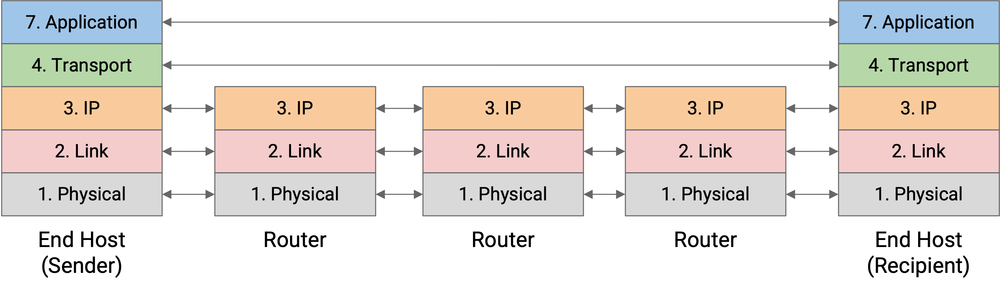
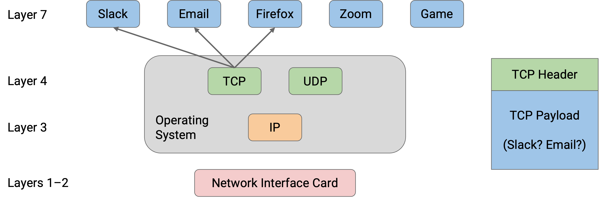
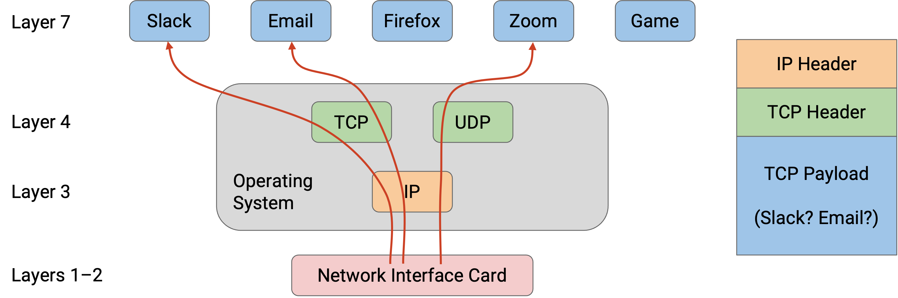
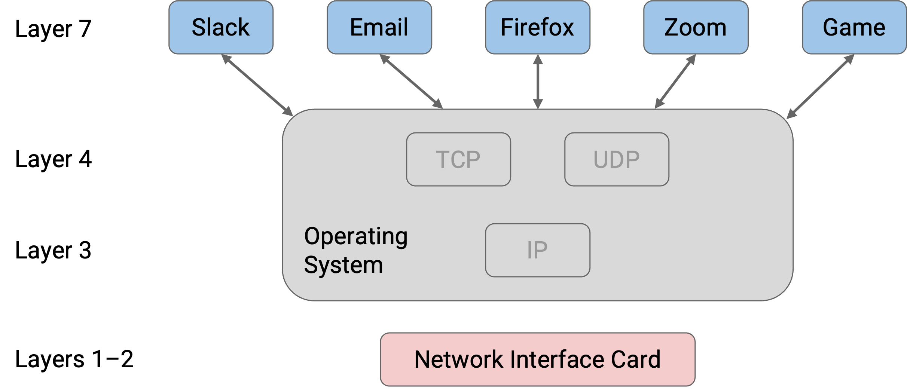
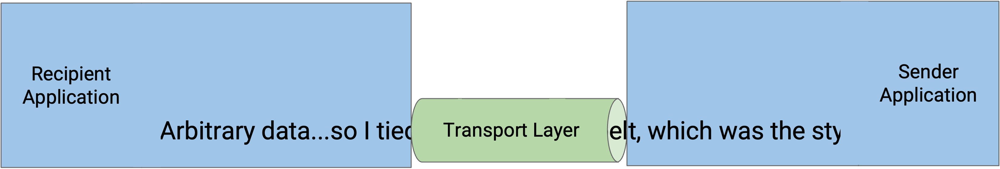
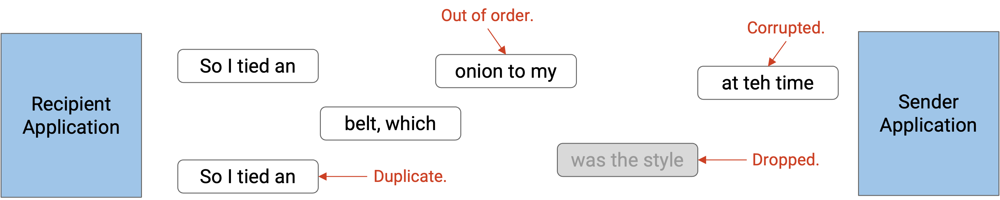
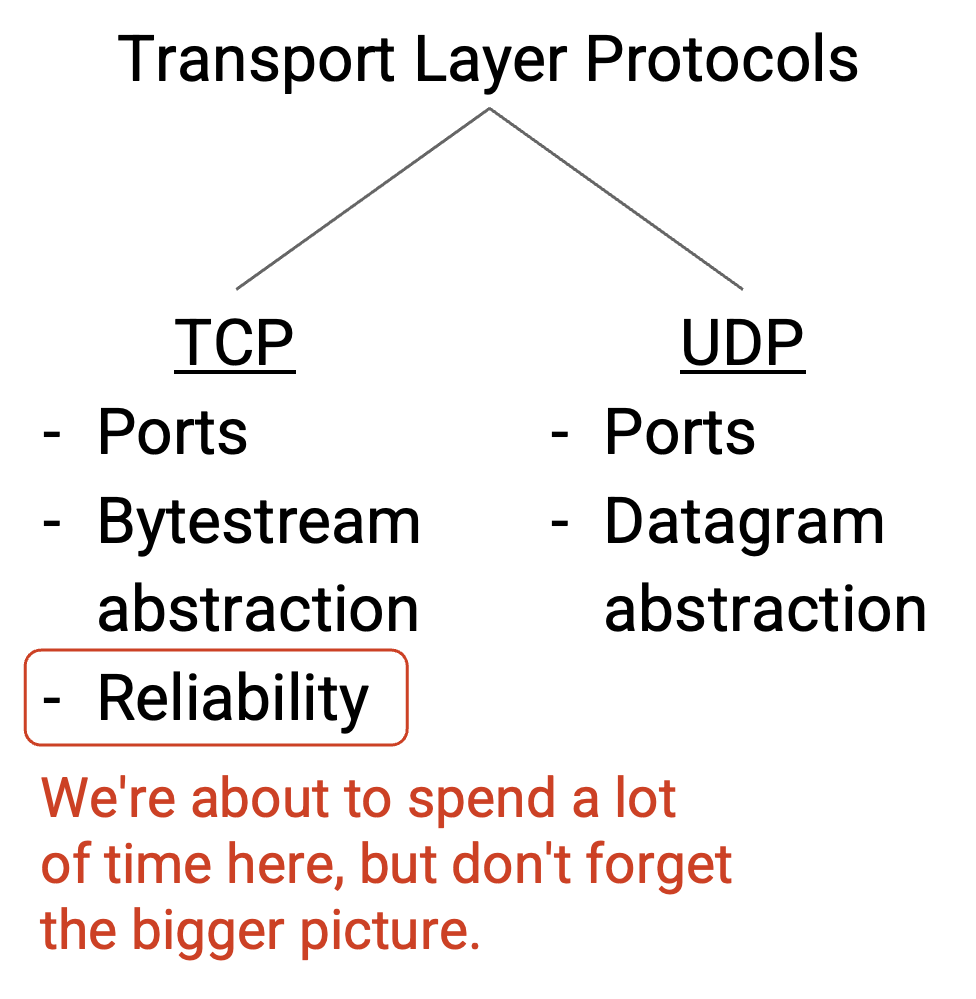

Transport Layer Principles
Reliability Abstraction and Goals
Many applications require reliability. For example, when sending a file over the Internet, we want the recipient to receive the same bytes in the same order as what the sender sent.
However, Layer 3 only provided unreliable, best-effort packet delivery. Packets can be lost (dropped), corrupted, and reordered (order of packets sent doesn’t match order of packets received). Packets can be delayed (e.g. a packet could stuck in a queue waiting to cross a link).
In rare cases, packets can even be duplicated, where the sender sends one packet but the recipient receives multiple copies of that packet. This usually happens if a router along the path encounters an error of some sort. In practice, this error is very rare.
Fun fact: Vern Paxson, UC Berkeley faculty, was one of the first people to discover and report packets being duplicated at the link layer.
We will use Layer 4 (the transport layer) to bridge this gap by developing protocols that rely on the best-effort packet abstraction supported by the network, and provide a reliable abstraction that application developers can use.
For practical reasons (discussed elsewhere), reliability is implemented at the end hosts, not at intermediate routers. Also, reliability is implemented in the operating system for convenience, so that applications don’t need to all re-implement their own reliability.

We will formalize reliability by defining at-least-once delivery. In this model, the destination must receive every packet, without corruption, at least once, but may receive multiple duplicate copies of a packet. The transport layer will use the best-effort delivery to provide at-least-once delivery. Then, using at-least-once delivery, our protocol can remove duplicates and provide exactly-once delivery to the applications.
Note that reliable delivery does not guarantee that packets will be sent. A computer not connected to the network cannot send data to the destination, no matter what reliability protocol we use. Reliability protocols are allowed to give up and fail to send a packet, but the failure must be reported to the application. The protocol cannot falsely claim to have successfully delivered a packet.
Our protocol should also be efficient. More specifically, our protocol should deliver data as quickly as possible, and our protocol should minimize bandwidth use and avoid sending packets unnecessarily. For example, we could guarantee that packets arrive by re-sending every packet hundreds of times, but this would violate our requirement of using bandwidth efficiently.
Transport Layer Goals
At the transport layer, our goal is to provide applications with a convenient abstraction that makes developers’ lives easier. The transport layer allows application developers to think in terms of connections, instead of individual packets being sent across the network. Ideally, the developers shouldn’t need to think about the low-level network details like splitting long data into packets, re-sending dropped packets, timeouts, etc.
Reliability is just one of several goals we might want to achieve at the transport layer.
The transport layer implements demultiplexing between different processes at the end host, by introducing port numbers that can be used to associate each flow (connection) with a different process on the end host.
The transport layer also implements flow control and congestion control, which will help limit the rate of packets being sent in order to avoid overloading the receiver and the network, respectively.
Demultiplexing with Ports
Suppose that my personal computer has two applications that are both talking to the same server. When packets arrive at my personal computer, they have the same source IP address (server), and the same destination IP address (my computer). How can I tell which packets are meant for which application?

In order to distinguish, or demultiplex, which packets are meant for which application, the transport layer header includes an additional port number, which can be used to identify a specific application on an end host.

When the transport layer receives a packet, it can use the port number to decide which higher-layer application the payload should be sent to. Because the transport layer is implemented in the operating system, these ports (sometimes called logical ports) are the attachment point where the application connects to the operating system’s network stack. The application knows its own port number, and the operating system knows the port numbers for all the applications, and the matching number is how data is unambiguously transferred between the application and operating system (without getting mixed up with data from other applications).

Port numbers are 16 bits long. The modern Internet commonly uses the client-server design, where clients access services, and servers provide those services. Servers usually listen for requests on well-known ports (port numbers 0-1023). Clients know these ports and can access them to request services. For example, application-level protocols with well-known port numbers include HTTP (port 80) and SSH (port 22).
By contrast, clients can select their own random port numbers (usually port numbers 1024-65535). These port numbers can be randomly-chosen, since the client is the one initiating the connection, and nobody is relying on the client having a fixed port number (the client isn’t providing services). Client port numbers are ephemeral (temporary), because the port number can be abandoned after the connection is over, and does not need to be permanent.
Bytestream Abstraction
Implementing reliability at the transport layer means that the application developer no longer needs to think in terms of individual limited-size packets being sent across the network. Instead, the developer can think in terms of a reliable in-order bytestream. The sender has a stream of bytes with no length limit, and provides this stream to the transport layer. Then, the recipient receives the exact same stream of bytes, in the same order, with no bytes lost. You can think of a bytestream as a pipe, where the sender inserts bytes, one by one, into the pipe, and those same bytes appear, one by one, on the recipient’s end of the pipe. The sender and recipient don’t need to think about re-sending lost packets or packets arriving out of order, because the transport layer protocol will implement that for the developer.

UDP and Datagrams
Sometimes, applications don’t need reliability. For example, consider a sensor that reads the water pressure in your home. The sensor sends a reading (small, fixed-size message with the time and water pressure) to the utility company every minute. This system might not need packets to arrive in order (e.g. if the readings already include timestamps), and might not need the ability to split long messages into packets (every reading is small). The system might not even need reliability, as long as most of the readings arrive at the utility company.
Applications that don’t need reliability can use UDP (User Datagram Protocol) instead of TCP at the transport layer. UDP does not provide reliability guarantees. If the application needs a packet to arrive, the application must handle re-sending packets on its own (the transport layer will not re-send packets). Messages in UDP are limited to a single packet. If the application wants to send larger messages, the application is responsible for breaking up and reassembling those messages. Note that UDP still implements the notion of ports for demultiplexing, though.

At the transport layer, you can choose to use either UDP and TCP depending on your needs, but you can’t choose to use both. UDP and TCP are the standard transport layer protocols in the modern Internet.

Other Reliability Designs
TCP was initially implemented by Vint Cerf and Bob Kahn, while they were students at UCLA. They have since been given the Turing Award, Presidential Medal of Freedom, etc. for their work. It’s pretty remarkable that the initial TCP design is pretty similar to what is used in practice today, and has stood the test of time. The core ideas of TCP are quite simple, and the design is quite elegant (though not perfect). However, the implementation can be tricky to get right, and the stakes are high, since almost the entire modern Internet runs on TCP.
Since its initial creation, many individual pieces of TCP have evolved (e.g. better algorithms for estimating timers, smarter acknowledgements, smarter ISN selection, congestion control), but the core architectural decisions and abstractions (connection-oriented bytestreams, windows) have remained the same.
TCP is the standard reliability protocol on the Internet, but other fundamentally different approaches exist.
For example, the sender could exploit the idea of redundancy (as seen in error-correcting codes or RAID) to send data more reliably. Instead of sending the user data as-is, the sender encodes the data into more packets with redundancy intentionally built into each packet. For example, the user might have 10 packets, and an algorithm might encode that data into 20 packets. The algorithm might guarantee that as long as any 15 of the 20 packets are received, then the original 10 packets of data can be reconstructed.
More formally, an encoding algorithm might take k packets, encode them as n packets (where n is greater than k), such that the original k packets can be recovered as long as any k’ of the packets are received (where k’ is greater than k but less than n).
Coding schemes are a deep topic with many algorithms (e.g. fountain codes, raptor codes), though we will not discuss them any further. They can be seen in practice in video streaming platforms.